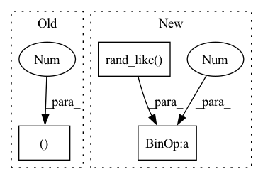

Pattern ID :116
Before Change
linearization.b.requires_grad = True
// Only need this line for the test since the objective is a mock
solver.reset(batch_size=batch_size)
damping_alpha_beta = (0.5 , 1.3 )
inputs = (
linearization.A_val,
linearization.b,After Change
// Only need this line for the test since the objective is a mock
solver.reset(batch_size=batch_size)
damping_alpha_beta = (
0.5 * torch.rand_like( linearization.A_val[:, 0]) ,
1.3 * torch.rand_like(linearization.A_val[:, 0]),
)
inputs = (In pattern: SUPERPATTERN
Frequency: 3
Non-data size: 3
Instances Fragment ID: 1258579
Project Name: facebookresearch/theseus
Commit Name: 00eee1a15c0f987f86c542d694ff6efc7b8fb1f9
Time: 2022-11-04
Author: luisen.p@gmail.com
File Name: theseus/optimizer/autograd/tests/test_lu_cuda_sparse_backward.py
M Class Name: AnonimousClass
N Class Name: AnonimousClass
M Method Name: test_sparse_backward_step(0)
N Method Name: test_sparse_backward_step(0)
M Parent Class:
N Parent Class:
M File Name: theseus/optimizer/autograd/tests/test_lu_cuda_sparse_backward.py
N File Name: theseus/optimizer/autograd/tests/test_lu_cuda_sparse_backward.py
M Start Line: 56
M End Line: 56
N Start Line: 38
N End Line: 59
Before Change
// smooth by maxpooling
// TODO: very naive...
tmp_grid = F.pad(tmp_grid, (0, 1, 0, 1, 0, 1 ))
tmp_grid = F.max_pool3d(tmp_grid.unsqueeze(0).unsqueeze(0), kernel_size=2, stride=1).squeeze(0).squeeze(0)
// ema updateAfter Change
xx, yy, zz = torch.meshgrid(xs, ys, zs, indexing="ij")
pts = torch.cat([xx.reshape(-1, 1), yy.reshape(-1, 1), zz.reshape(-1, 1)], dim=-1) // [N, 3]
// add noise in [-hgs, hgs]
pts += (torch.rand_like( pts) * 2 - 1) * half_grid_size
// manual padding for ffmlp
n = pts.shape[0]
pad_n = 128 - (n % 128) Fragment ID: 1258544
Project Name: ashawkey/torch-ngp
Commit Name: 7357d93951f0caa2453b257aa8530b2f623e4fe3
Time: 2022-02-28
Author: ashawkey1999@gmail.com
File Name: nerf/renderer.py
M Class Name: NeRFRenderer
N Class Name: NeRFRenderer
M Method Name: update_extra_state(3)
N Method Name: update_extra_state(3)
M Parent Class: nn.Module
N Parent Class: nn.Module
M File Name: nerf/renderer.py
N File Name: nerf/renderer.py
M Start Line: 307
M End Line: 330
N Start Line: 305
N End Line: 323
Before Change
// return (1 - mask) * x1 + mask * x2
def mix(x1, x2, epsilon):
r = float(torch.rand((1 ,)))
if r > epsilon:
return x1
return x2After Change
"""
Returns ~ x1 * (1 - epsilon) + x2 * epsilon
"""
mask = torch.rand_like( x1)
mask = (mask < epsilon).float()
return (1 - mask) * x1 + mask * x2
Fragment ID: 1258598
Project Name: thomas-schillaci/simple
Commit Name: 6faa32e29e1bb756ef80dc6999d6233b91e580db
Time: 2020-11-02
Author: thomas.schillaci@gmail.com
File Name: src/utils.py
M Class Name: AnonimousClass
N Class Name: AnonimousClass
M Method Name: mix(3)
N Method Name: mix(3)
M Parent Class:
N Parent Class:
M File Name: src/utils.py
N File Name: src/utils.py
M Start Line: 197
M End Line: 200
N Start Line: 196
N End Line: 198